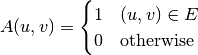
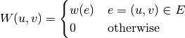
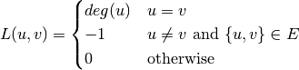

Matrix representation of graphs are widely used in algebraic analysis of graphs. This package comprises functions that derive matrix representation of an input graph.
An adjacency matrix is defined as

Constructs an adjacency matrix from a list of edges (over n vertices).
Constructs an adjacency matrix for a graph.
A weight matrix is defined as

Constructs a weight matrix from a list of edges and a vector of edge weights.
Constructs a weight matrix from a graph and a vector of edge weights. Here, g must implement edge_map and (edge_list or incidence_list).
Laplacian matrix is significant in algebraic graph theory. The eigenvalues of a Laplacian matrix characterizes important properties of a graph. For an undirected graph, it is defined as:

Constructs a Laplacian matrix from a list of edges (over n vertices).
Constructs a Laplacian matrix over an undirected graph.
For graphs with weighted edges, we have
Constructs a weighted Laplacian matrix from a list of edges together with a vector of edge weights.
Constructs a weighted Laplacian matrix from an undirected graph with a vector of edge weights.